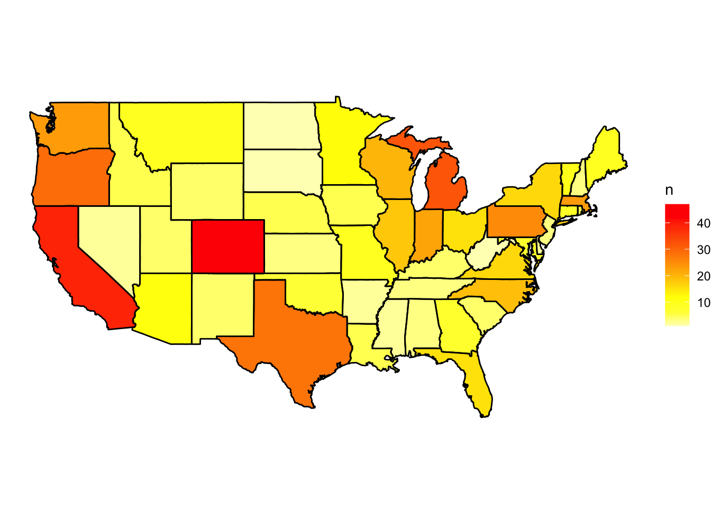
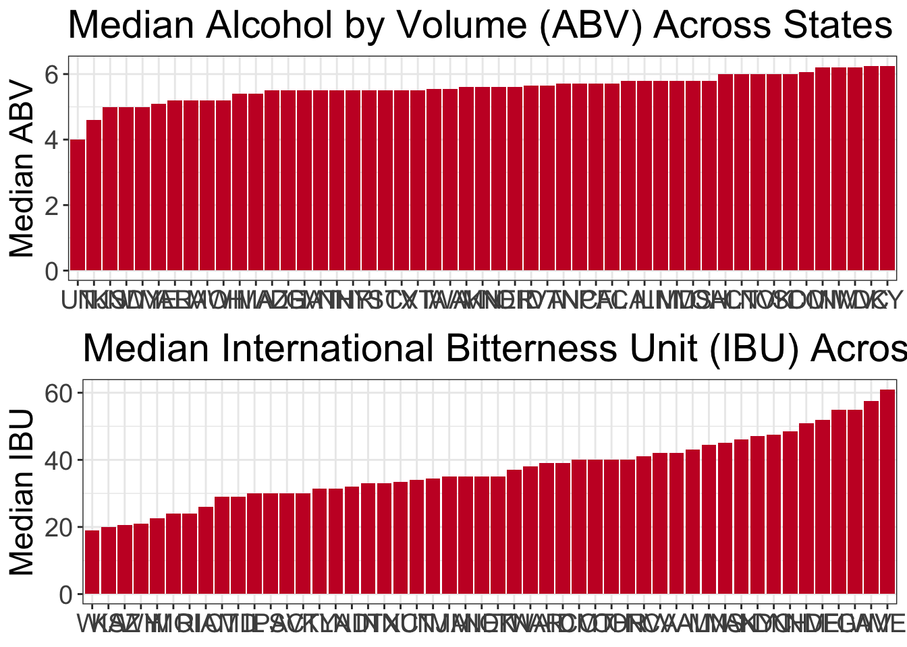
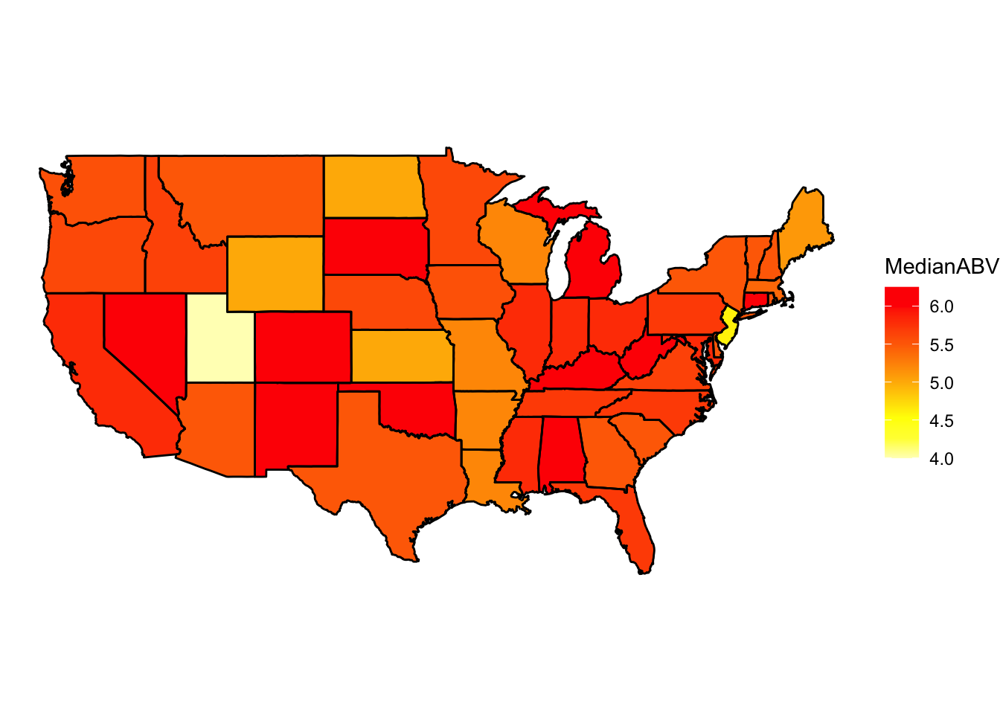
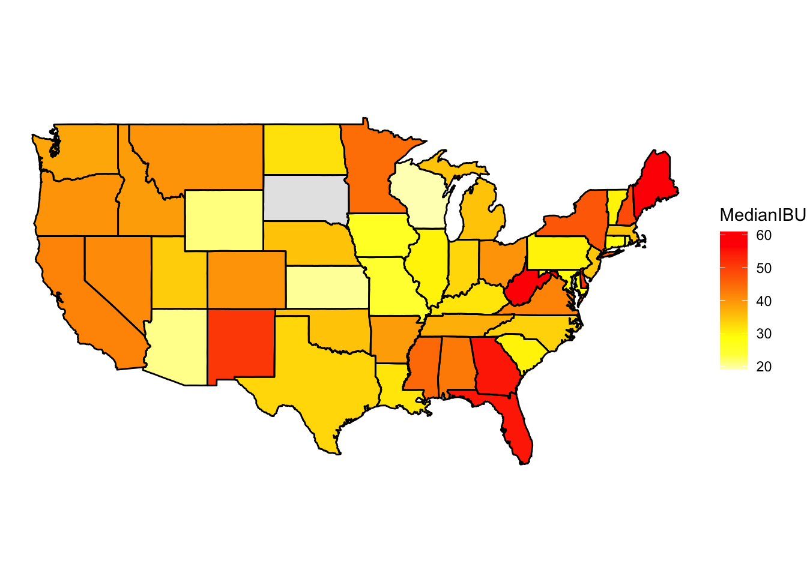
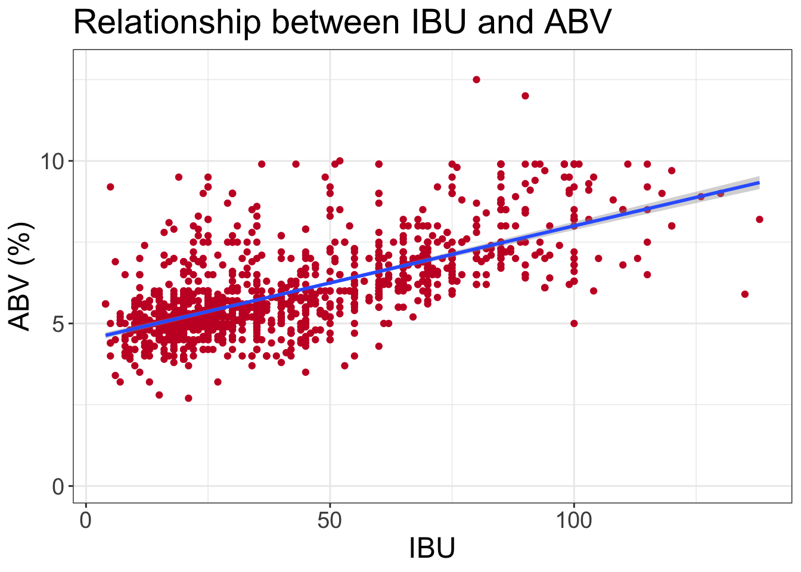
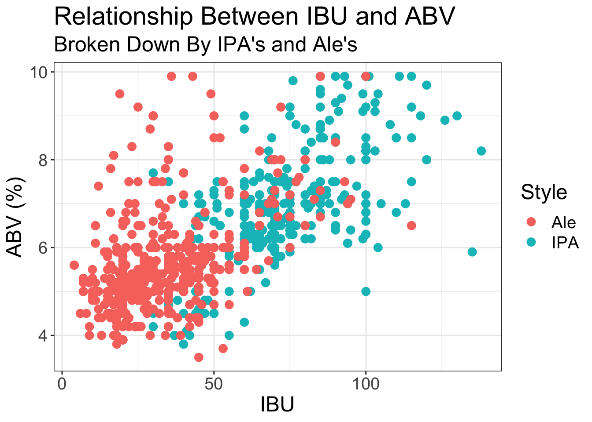
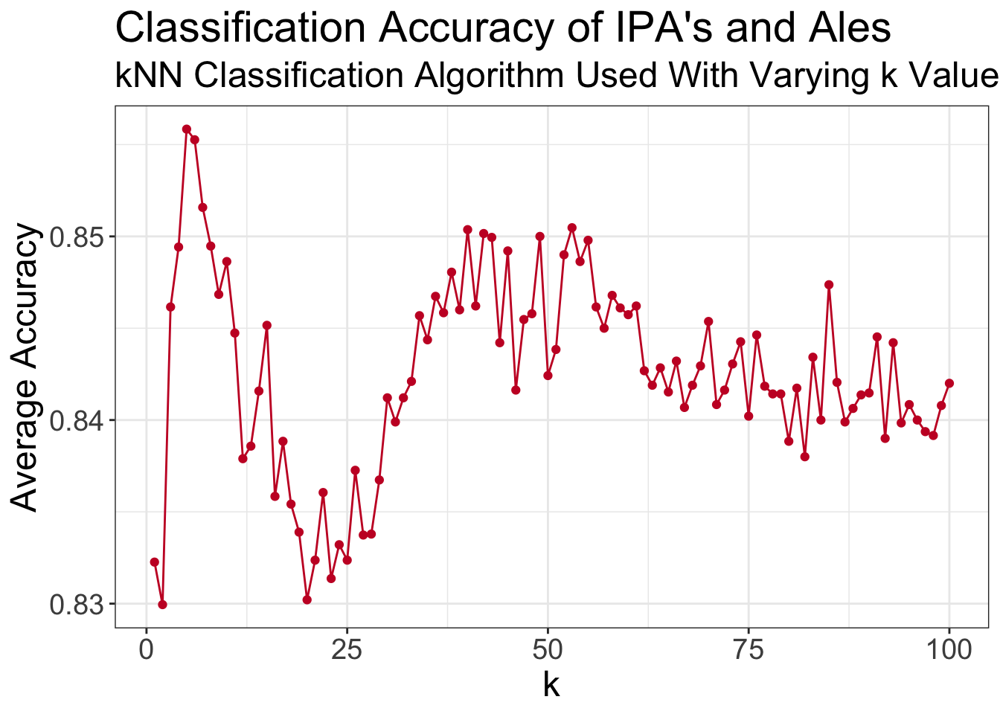
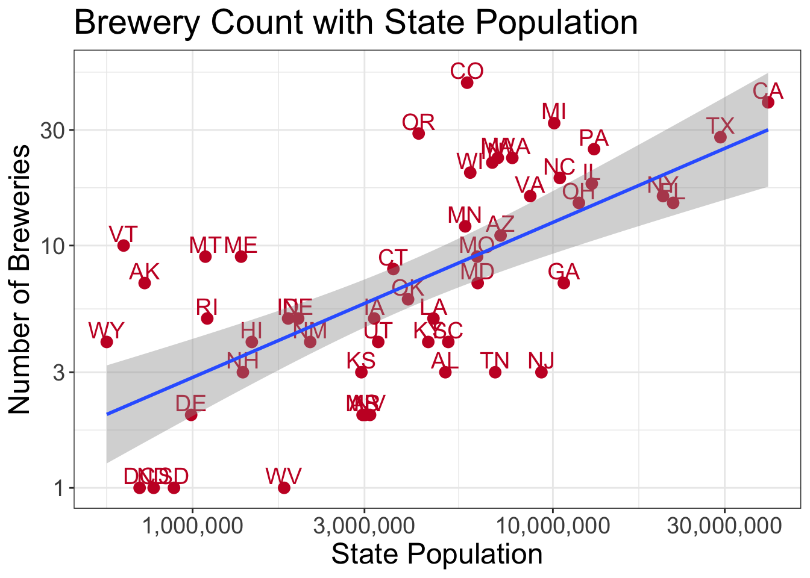
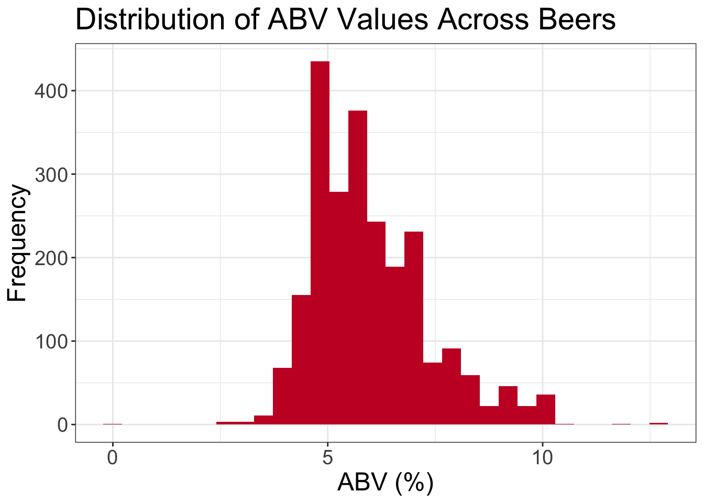

library(tidyverse)
library(maps)
library(gridExtra)
library(class)
library(caret)
library(e1071)
theme_set(theme_bw())Budweiser - Beer and Brewery Analysis
Exploratory data analysis (EDA)
Data import
Import the beers and breweries data sets and do minor cleanup
beers = read_csv("/Users/andrewyule/Dropbox/Personal/SMU MSDS/03 - Doing Data Science/SMU_DDS_CaseStudy1/Data/Beers.csv")
breweries = read_csv("/Users/andrewyule/Dropbox/Personal/SMU MSDS/03 - Doing Data Science/SMU_DDS_CaseStudy1/Data/Breweries.csv")
# Change ABV from fraction to percent
beers = beers |>
mutate(ABV = ABV * 100)Analysis questions
1. How many breweries are present in each state?
In the data, Colorado was found to have the most number of breweries from the data set (47), followed by California (39), Michigan (32), Oregon (29), and Texas (28). The lowest counted number of breweries was 1, which was found in Washington DC, North Dakota, South Dakota and West Virigina.
breweryCount = breweries |> count(State)
stateAbbreviations = tibble(abb = state.abb, name = tolower(state.name))
breweryCount = left_join(breweryCount, stateAbbreviations, by = c("State" = "abb"))
states = as_tibble(map_data("state"))
breweryCount = left_join(states, breweryCount, by = c("region" = "name"))
ggplot(breweryCount, aes(x = long, y = lat, group = group))+
geom_polygon(aes(fill = n))+
geom_path() +
scale_fill_gradientn(colours = rev(heat.colors(10)), na.value = "grey90") +
coord_map() +
labs(x = NULL, y = NULL) +
theme_void()
What percentage of breweries do the top 5 states make up?
sum(arrange(count(breweries, State), desc(n))[1:5, 2]) / sum(count(breweries, State)[, 2])[1] 0.31362012. Merge the beers and breweries data sets to create a single data set containing both beer information as well as brewery
The two datasets (beers and breweries) were merged using a left_join across the columns “Brewery_ID” (for beers) and “Brew_ID” (for breweries). The left join ensures that we only insert brewery information where a matching beer is found.
beers = left_join(beers, breweries, by = c("Brewery_id" = "Brew_ID")) |>
rename(Beer = Name.x) |>
rename(Brewery = Name.y)
beers |> head(n = 6)# A tibble: 6 × 10
Beer Beer_ID ABV IBU Brewery_id Style Ounces Brewery City State
<chr> <dbl> <dbl> <dbl> <dbl> <chr> <dbl> <chr> <chr> <chr>
1 Pub Beer 1436 5 NA 409 Amer… 12 10 Bar… Bend OR
2 Devil's Cup 2265 6.6 NA 178 Amer… 12 18th S… Gary IN
3 Rise of the P… 2264 7.1 NA 178 Amer… 12 18th S… Gary IN
4 Sinister 2263 9 NA 178 Amer… 12 18th S… Gary IN
5 Sex and Candy 2262 7.5 NA 178 Amer… 12 18th S… Gary IN
6 Black Exodus 2261 7.7 NA 178 Oatm… 12 18th S… Gary IN beers |> tail(n = 6)# A tibble: 6 × 10
Beer Beer_ID ABV IBU Brewery_id Style Ounces Brewery City State
<chr> <dbl> <dbl> <dbl> <dbl> <chr> <dbl> <chr> <chr> <chr>
1 Rocky Mountai… 1035 7.5 NA 425 Amer… 12 Wynkoo… Denv… CO
2 Belgorado 928 6.7 45 425 Belg… 12 Wynkoo… Denv… CO
3 Rail Yard Ale 807 5.2 NA 425 Amer… 12 Wynkoo… Denv… CO
4 B3K Black Lag… 620 5.5 NA 425 Schw… 12 Wynkoo… Denv… CO
5 Silverback Pa… 145 5.5 40 425 Amer… 12 Wynkoo… Denv… CO
6 Rail Yard Ale… 84 5.2 NA 425 Amer… 12 Wynkoo… Denv… CO 3. Address the missing values in each column.
The only columns from the data set containing missing entries are ABV (alcohol by volume), IBU (international bitterness units), and Style. The highest number of missing values was found for the IBU variable (42% of values are missing). The high amount of missing values for IBU should be considered in any further analysis involving this variable.
(colSums(is.na(beers))/dim(beers)[1])*100 Beer Beer_ID ABV IBU Brewery_id Style Ounces
0.0000000 0.0000000 2.5726141 41.7012448 0.0000000 0.2074689 0.0000000
Brewery City State
0.0000000 0.0000000 0.0000000 4. / 5. Compute the median alcohol content and international bitterness unit for each state. Plot a bar chart to compare. Which state has the maximum alcoholic (ABV) beer? Which state has the most bitter (IBU) beer?
The median alcohol by volume (ABV) across the states varies between 0.04 (Utah) and 0.0625 (Washington DC & Kentucky). The median international bitterness unit (IBU) varies between 19 (Wisconsin) and 61 (Maine).
medianABV = beers |>
filter(!is.na(ABV)) |>
group_by(State) |>
summarize(ABV = median(ABV))
medianIBU = beers |>
filter(!is.na(IBU)) |>
group_by(State) |>
summarize(IBU = median(IBU))
p1 = medianABV |>
ggplot(aes(x = reorder(State, ABV), y = ABV)) +
geom_col(fill = "#C80F2D") +
labs(y = "Median ABV", x = NULL, title = "Median Alcohol by Volume (ABV) Across States") +
theme(text=element_text(size=18))
p2 = medianIBU |>
ggplot(aes(x = reorder(State, IBU), y = IBU)) +
geom_col(fill = "#C80F2D") +
labs(y = "Median IBU", x = NULL, title = "Median International Bitterness Unit (IBU) Across States") +
theme(text=element_text(size=18))
grid.arrange(p1, p2)
beers |>
filter(!is.na(ABV)) |>
group_by(State) |>
summarize(MedianABV = median(ABV)) |>
left_join(stateAbbreviations, by = c("State" = "abb")) |>
left_join(states, y = _, by = c("region" = "name")) |>
ggplot(aes(x = long, y = lat, group = group)) +
geom_polygon(aes(fill = MedianABV)) +
geom_path() +
scale_fill_gradientn(colours = rev(heat.colors(10)), na.value = "grey90") +
coord_map() +
labs(x = NULL, y = NULL) +
theme_void()
beers |>
filter(!is.na(IBU)) |>
group_by(State) |>
summarize(MedianIBU = median(IBU)) |>
left_join(stateAbbreviations, by = c("State" = "abb")) |>
left_join(states, y = _, by = c("region" = "name")) |>
ggplot(aes(x = long, y = lat, group = group)) +
geom_polygon(aes(fill = MedianIBU)) +
geom_path() +
scale_fill_gradientn(colours = rev(heat.colors(10)), na.value = "grey90") +
coord_map() +
labs(x = NULL, y = NULL) +
theme_void()
The absolute maximum ABV and IBU for any state
slice_max(beers, ABV, n = 1)# A tibble: 1 × 10
Beer Beer_ID ABV IBU Brewery_id Style Ounces Brewery City State
<chr> <dbl> <dbl> <dbl> <dbl> <chr> <dbl> <chr> <chr> <chr>
1 Lee Hill Seri… 2565 12.8 NA 52 Quad… 19.2 Upslop… Boul… CO slice_max(beers, IBU, n = 1)# A tibble: 1 × 10
Beer Beer_ID ABV IBU Brewery_id Style Ounces Brewery City State
<chr> <dbl> <dbl> <dbl> <dbl> <chr> <dbl> <chr> <chr> <chr>
1 Bitter Bitch … 980 8.2 138 375 Amer… 12 Astori… Asto… OR 7. Is there an apparent relationship between the bitterness of the beer and its alcoholic content? Draw a scatter plot. Make your best judgment of a relationship and EXPLAIN your answer.
The scatterplot between IBU and ABV shows that there is a positive correlation (0.67). This indicates that as IBU increases, it is expected that ABV will increase as well.
cor(beers[!is.na(beers$ABV) & !is.na(beers$IBU),]$IBU, beers[!is.na(beers$ABV) & !is.na(beers$IBU),]$ABV)[1] 0.6706215beers |>
ggplot(aes(x = IBU, y = ABV)) +
geom_point(color = "#C80F2D") +
geom_smooth(method = "lm") +
labs(x = "IBU", y = "ABV (%)", title = "Relationship between IBU and ABV") +
theme(text=element_text(size=18))
8. Investigate the difference with respect to IBU and ABV between IPAs (India Pale Ales) and other types of Ale.
Visual evidence shows that there is distinct difference between IBU and ABV values of IPA’s compared with Ales. In general, IPA have both higher IBU and ABV.
ipa = beers |>
filter(!is.na(ABV) & !is.na(IBU)) |>
filter(str_detect(Style, "(?:IPA|India.*Pale.*Ale)")) |>
select(ABV, IBU) |>
mutate(Style = "IPA")
ales = beers |>
filter(!is.na(ABV) & !is.na(IBU)) |>
anti_join(ipa) |>
filter(str_detect(Style, "Ale")) |>
select(ABV, IBU) |>
mutate(Style = "Ale")
ipaAndAles = full_join(ipa, ales)
# Visually show the relationship between IBU and ABV broken down between IPA's and Ales
ipaAndAles |>
ggplot(aes(x = IBU, y = ABV, color = Style)) +
geom_point(size = 3) +
labs(x = "IBU", y = "ABV (%)", title = "Relationship Between IBU and ABV", subtitle = "Broken Down By IPA's and Ale's") +
theme(text=element_text(size=18))
Based on the visual evidence above, classifying whether a beer is either an IPA or Ale should be possible with high accuracy. To test this theory, a k nearest neighbors classification (kNN) algorithm was used. After cross validating using a 80/20 train/test split, an optimal k value of 5 was found, which yielded an overall classification accuracy of ~85% confirming that it is possible to distinguish between an IPA and an Ale based on the beers IBU and ABV.
set.seed(1234)
# Create a function to evaluate classification accuracy using an 80/20 split with varying values of k
evaluateKNN = function(k = 1){
split = 0.8
indicies = sample(1:dim(ipaAndAles)[1], ceiling(dim(ipaAndAles)[1] * split))
train = ipaAndAles[indicies, ]
test = ipaAndAles[-indicies, ]
results = knn(train[, c(1, 2)], test[, c(1, 2)], ifelse(train[, 3] == "IPA", 0, 1), k = k)
confusionMatrix(as_factor(c(ifelse(test[, 3] == "IPA", 0, 1))), results)$overall[1]
}
optimalK = crossing(set = 1:100, k = 1:100)
optimalK = optimalK |>
rowwise() |>
mutate(Accuracy = evaluateKNN(k))
# Plot the results of the cross validation showing possible achievable accuracy
optimalK |>
group_by(k) |>
summarize(Accuracy = mean(Accuracy)) |>
ggplot(aes(x = k, y = Accuracy)) +
geom_point(color = "#C80F2D") +
geom_path(color = "#C80F2D") +
labs(x = "k", y = "Average Accuracy", title = "Classification Accuracy of IPA's and Ales", subtitle = "kNN Classification Algorithm Used With Varying k Values") +
theme(text=element_text(size=18))
9. Which states may be under represented by the number of breweries and would thus benefit from Budweiser investment?
A visual of the population of each state ploted on a log-log scale with the number of breweries along with a linear line of best fit allows for a distinction between states that potentially have more saturated number of breweries as compared to less. From this visual, it can be seen that states like Georgia, New Jersey, Tennessee, Alabama, and South Carolina are all potentially under represented in their brewery count while still having high enough populations to make investment in more breweries economical for Budweiser.
statePopulations = read_csv("/Users/andrewyule/Dropbox/Personal/SMU MSDS/03 - Doing Data Science/SMU_DDS_CaseStudy1/Data/State_Populations.csv")
statesWithBreweriesAndPopulations = left_join(breweries, statePopulations, by = "State") |>
group_by(State) |>
summarize(Breweries = n(), Population = Population) |>
filter(!duplicated(State, Breweries, Population))
statesWithBreweriesAndPopulations |>
ggplot(aes(x = Population, y = Breweries)) +
geom_point(size = 3, color = "#C80F2D") +
geom_text(aes(label = State), nudge_y = 0.05, color = "#C80F2D", size = 5) +
geom_smooth(method = "lm") +
#scale_x_log10(labels = ~ format(.x, scientific = FALSE)) +
scale_x_log10(labels = scales::comma) +
scale_y_log10() +
labs(x = "State Population", y = "Number of Breweries", title = "Brewery Count with State Population") +
theme(text=element_text(size=18))
6. Comment on the summary statistics and distribution of the ABV variable.
Overall, the average ABV is around 0.059, with a minimum and maximum reported value of 0.001 and 0.128 respectively. The distribution of ABV is right skewed, meaning there are a few beers with very high alcohol contents increasing the mean ABV compared to the median ABV.
